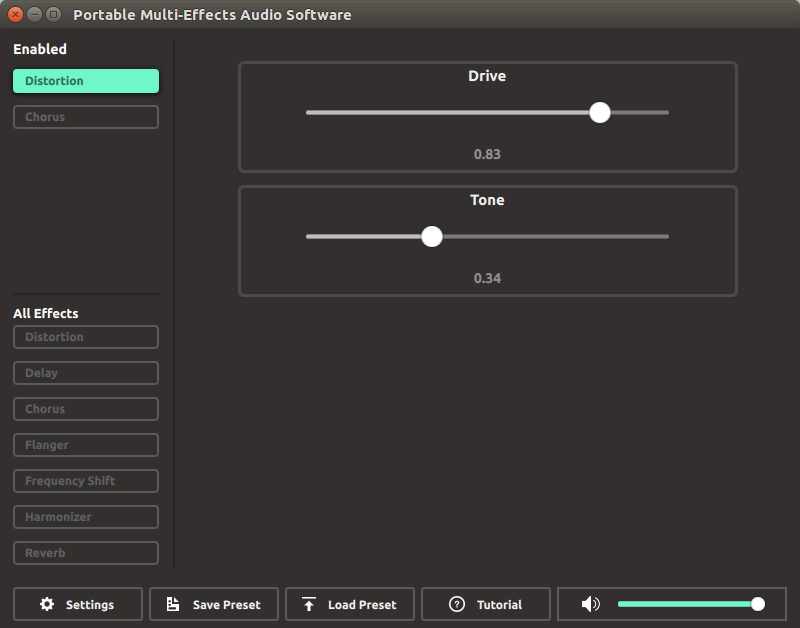

About PMEAS
Introduction
The PMEAS system was a proudct of the WSU Senior Project (Capstone) class. It was inspired by the need to find an alternative to expensive physical instrument pedals. It was created under the vision of our client Benjamin Ciaglo, an alumni from Wayne State. The vision was to create a product that musicians can use to modulate numerous audio effects digitally for free. If willing, musicians familiar with development and begin contributing to the project and adding their own features that other musicians might want to use as well. Indeed, another large aspect of this project is to keep it Open Source under the GPLv3 license. This way, there would be no question about its usage in various environments a musician would find themselves in.
This project is made possible through integrating several external projects together under the PMEAS hood to enable modulation and audio capture and playback as well as through the creation of the graphical interfaces the user can use to enable the effects. The PMEAS project uses the following software:
- JACK - Allows the device to capture audio from an instrument and play it back to the a speaker.
- Pyo - Performs the actual audio modulation (and loop functionality) once captured by JACK.
- Qt - The frontend framework for creating the GUI application on desktop applications.
Without the tools provided by these frameworks, the project would not be as robust and great as it is currently! The project tries best to balance high quality modulation and stability with the lowest possible latency (time taken to play a note on the instrument and hear it modulated in the speaker). The use of Pyo applies great audio modulation techniques and algorithms to modulate audio properly. You can read more about how audio is modulated in our brief Introduction to Audio Modulation article.
Features
The table below gives an overview of what effects are supported and their appropriate ranges
| Effect | Description |
|---|---|
| Distortion | Increase in the amount of gain added to the point of clipping the signal to give a louder, more powerful effect. |
| Delay | Repeat the signal in an “echo” after a certain interval of time. |
| Chorus | Duplicate the original audio wave and place the wave slightly out of time and pitch from original audio wave. |
| Frequency Shift | Takes the input signal and changes its pitch (frequency) by a pre-specified number of Hz. |
| Reverb | The simulation of a resonance sound heard from an audio wave as it bounces off an external environment. |
| Harmonizer | Takes the input signal and changes its pitch frequency by a pre-specified number of semitones. |
| Flanger | An effect that applies a separate phase effect to the audio stream and combines it back with the actual audio stream. |
User Interface
The desktop user interface was built on top of the Qt framework, allowing it to be run on all the major modern operating systems. A glimpse of the interface can be seen in the screenshot below; all the functionalities are intuitive to use, but feel free to take the tutorial available in this application to get an introduction to using the system
